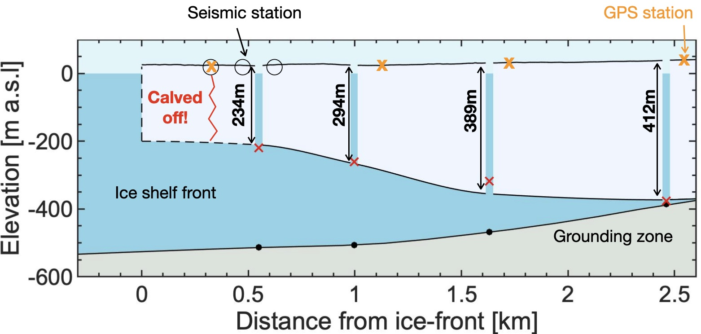

広大な南極氷床，内陸からいくつもの氷流によって沿岸部に氷が移動しています．南極氷床沿岸部の実に７割は氷河の末端が海に浮いた棚氷や浮氷舌を形成しています．これらの棚氷や浮氷舌からのカービングや底面での海洋による氷融解が南極氷床が氷を失うプロセスです．
棚氷に孔を掘り，直接海洋の温度や海水が流れる速度を実施することで，底面融解量の定量化や底面融解プロセスの理解を目指しています．
また，棚氷の先端で発生するカービングの発生メカニズムについて，氷が破砕する際に生じる氷震や数値モデルを組み合わせることで研究を進めています．
キーワード
南極，棚氷，底面融解，カービング，氷震，数値モデリング
研究成果
- M. Minowa, S. Sugiyama, I. Masato, S. Yamane and S. Aoki (2021), Thermohaline structure and circulation beneath the Langhovde Glacier ice shelf in East Antarctica, Nature Communications, 12, 4209, doi:10.1038/s41467-021-23534-w


- M. Minowa, E. A. Podolskiy, S. Sugiyama (2019), Tide-modulated ice motion and seismicity of an ice shelf in East Antarctica, Annals of Glaciology, 60(79), 57–67, doi: 10.1017/aog.2019.25